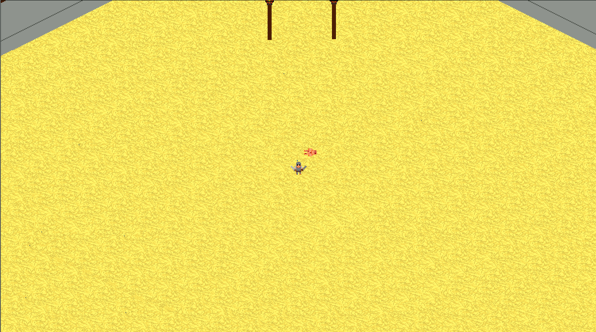

Some terrain mesh manipulation in Unity made to work in real time directly in the editor.
This uses the open-source code FastNoise, in order to produce the semi-random form. Directly in the editor we can create multiple layers of noise in order to make more complex shapes.
With this I manage to make some procedurally generated terrain :
The user interface is used to change Size and Seed for the procedurally generated Terrain. The seed is used to make different terrain form by moving noise position. The terrain also have different biomes depending on vertex height, vertex position and slope.
Drone Shooter
A prototype to test Unity's 3D functonalities by making a FPS.
Asteroïds
A remake of the famous 1979 Asteroids game made on Unity.
To play use the directional arrows to move and SPACE to shoot.
The Server, meanwhile, has hundreds, sometimes more than 1000 players connected simultaneously every day.
As well as a community of more than a hundred thousand people (number of members on their discord server).
Dragon Ball Ninjin
Dragon Ball NINJIN is a Minecraft server project in Dragon Ball theme based on JinGames's Dragon Block C mod.
It is a French-speaking survival and semi-RolePlay server, the goal being to get as close as possible to the atmosphere of the DragonBall universe described in the manga and anime.
For more info visit the server's website(in French):
A small action-RPG prototype made in GameMaker. All the assets were made by myself. Very simple game where the player can move / attack, as well as collect equipment. For now you can only fight an unarmed individual in an arena that will respawn each time you leave the location.

To play use the directional arrows to move, A / Z to Attack, W / X to grab an object, C / V to drop an object from your hand, B / N / H to drop equipment and SPACE to interact . To fight in the arena, take the entrance at the top left, then move left and press SPACE to enter the arena.